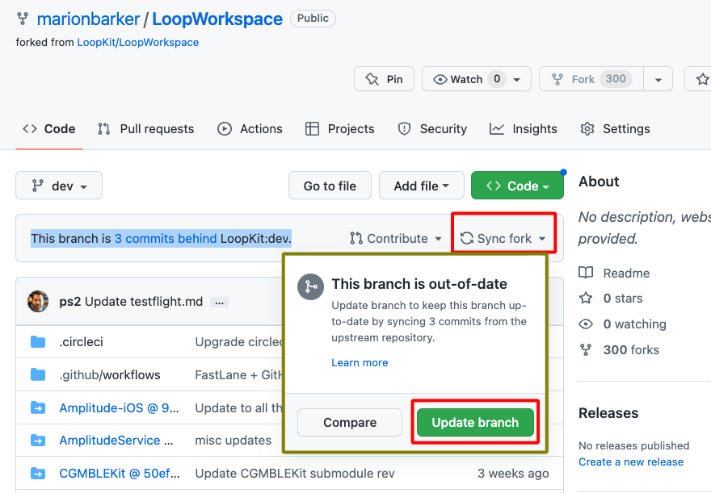
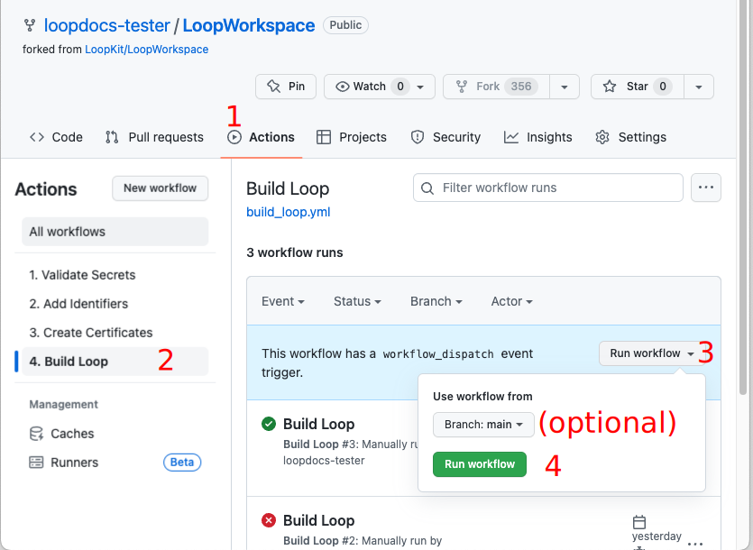
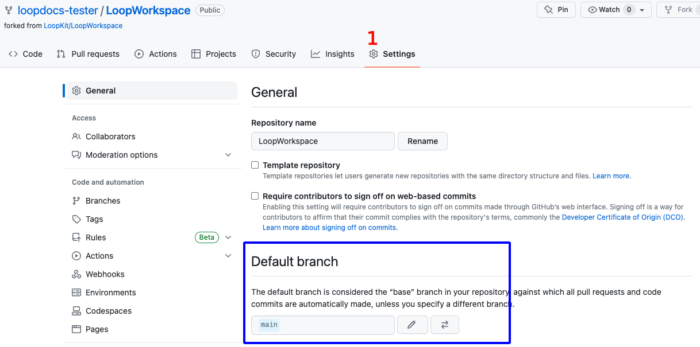
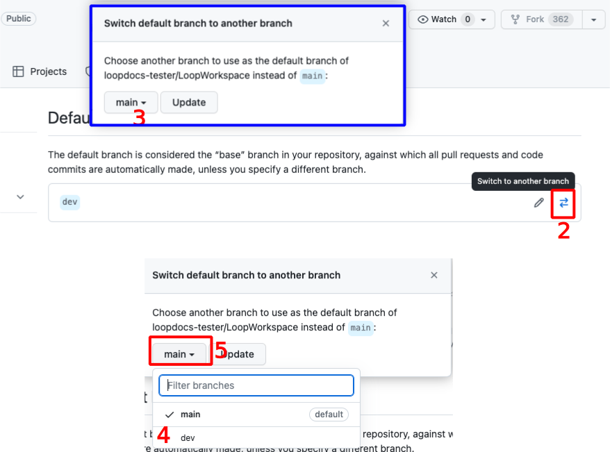
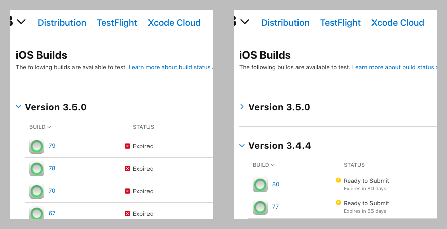

Build Loop dev with Browser
Overview¶
This page is only relevant when building the dev branch with a browser.
For Mac, please see: Build Loop dev with Mac
No matter the method used to build Loop-dev, you are testing development code. Please read this link now before continuing.
Build Development Version¶
For Experienced Builders
Building the development (dev branch) is not typically used for your first attempt at building the Loop app.
The instructions on this page assume you are familiar with building the Loop app using a browser as detailed on Configure to use Browser
- You should be following along with zulipchat when using the
dev branch - Summary build updates can be found under the One-Time Changes section
You can build any desired branch (available at LoopKit/LoopWorkspace) using the GitHub Browser build method. This section is suitable if you have already built either dev or main branch using the GitHub First-Time instructions.
The graphics on this page show the dev branch. If you want a different branch, just substitute that branch name for dev.
Overview of what you will do
- Your
LoopWorkspace forkmust have thebranchyou want- You will either add it or make sure it is up to date
- You cannot just rename your existing branch to
dev- you must get thedevbranch from LoopKit
- When you select the action
4. Build Loopand then click on theRun Workflowdropdown, you must selectdevthere before clicking the greenRun workflowbutton - see BuildBranch
Check Current Branch¶
Your LoopWorkspace fork is at https://github.com/username/LoopWorkspace where you substitute your actual GitHub username. You need to be logged into GitHub. Review the graphic below as you go through the steps.
- Click on the
branchicon to display thebranchesas shown in the lower half of the graphic below:- If the
branchyou want is not listed, then continue with Step 2 - Otherwise, skip ahead to Update
Branch
- If the
- Click on the
New branchbutton and follow the AddBranchsteps

Add Branch¶
Each step in the list below matches with the number in the graphic. In the top half of the graphic, the left side shows the initial display and the right side shows the display after making the indicated selections:
- Click on the drop down menu labeled 1 in the graphic and choose LoopKit/LoopWorkspace as show in the top right graphic
- Click on the drop down menu labeled 2 in the graphic and choose
dev - Click on the
Branchname box labeled 3 in the graphic and typedev- The branch name in your
forkshould always match the branch name you are adding; check that you type it correctly
- The branch name in your
- Review the dialog items to make sure everything is correct and then tap on Create branch

Update Branch¶
If you normally build released code, but decided to build the
dev branchbecause you want the features and bug fixes found there, please do not update the fork for thedev branchwithout first finding out what has changed since your last build.
Tap the Code button (upper left) and ensure this branch in your fork is up to date.
- Select the desired branch in the dropdown menu (this graphic shows
devbranch) - If the message indicates this branch is "behind", tap on the sync
forkbutton and then the Update branch button

One-Time Changes¶
Look in this section for one-time changes for building dev with a browser that require special, one-time actions.
No one-time changes are required. This assumes you built main after the release of 3.6.
Build Branch¶
We recommend most users leave their default branch as
main.
If you have one branch as default, for example main, and choose to build a different branch, there is an extra step when you Build Loop. In addition to the normal steps 1, 2 and 3 in the graphic below, you must also do the (optional) step. Select the dev branch in the branch dropdown menu before continuing to step 4 and tapping on the green Run workflow button.

Refresh, Do Not Repeat¶
Hit Refresh
After you tap the green Run workflow button, GitHub can be slow to update.
- Refresh the browser if you are unsure if the action started
- Do not start a new action until the first one completes
Automatic Update & Build¶
The Automatic Update & Build features are applied to the default branch of your repository. Normally this is the main branch. If you are a developer or tester who wants the dev branch to be built automatically, you must configure it as your default branch. Be aware that for this situation, you will not get automatic updates of released code.
Most people should keep main as default and make a considered decision when to launch a manual build of the dev branch. At that time, it will automatically update to the latest dev commit unless you have modified your settings with special Variables: Modify Automatic Building.
Change Default Branch¶
We recommend most users leave their default branch as
main.
There can be several reasons why you would change your default branch.
- It can be convenient to have the branch you build most be configured as the default branch
- The branch you want to build has a different workflow than your default branch (not typical)
- In this case, you must modify the default branch
- Check the zulipchat conversation about the branch you are testing to see if it is necessary to make it default
These are the steps to modify the default branch.
For this example, we show how to change from a default branch of main to a default branch of dev. Note - only the owner of the repository can take this action and they must be logged in. Otherwise the Settings tab does not appear.
For the numbered steps below, refer to the graphic found under each group of steps.
-
Click on the Settings Icon near the top right of your LoopWorkspace
- You may need to scroll down to see the
Default Branchas shown in the graphic - Do not tap on the Branches tab to the left under Code and Automation, that is not the correct menu

- You may need to scroll down to see the
-
To the right of the default branch name there is a pencil and a left-right arrow icon
- Tap on the left-right arrow icon to bring up the
Switch default branch to another branchdialog
- Tap on the left-right arrow icon to bring up the
- Click on the dropdown next to the current default branch, in this example,
main - Select the desired default branch, in this example,
dev -
Click on the
Updatebutton
-
You will be presented with an are-you-sure question.
- Click on the red
I understand, update the default branch.button

- Click on the red
Your default branch has been changed.
Automatic Update & Build¶
The automatic update and build features are available for both the released (main) and development (dev) branch, but only for your default branch. For any other branch name set as your default branch, there is no automatic update available but the automatic build will run monthly.
Be sure to read this page: Automatic Update & Build.
What Happens in TestFlight¶
As soon as you build one version of the app from the dev branch, that version number (which is higher than the main branch) will show up at the top of the available builds in TestFlight.
Suppose you then return to using the main branch after your excursion to the dev branch.
For this example, version 3.6.x is the released version from the
mainbranch and version 3.7.0 is the development version you evaluated.
Every time you open TestFlight on your phone and select the Loop app, it will offer the most recent 3.7.0 version to be installed if you just tap Install. You might be in a situation where that build is about to expire or you decide you don't want to test this on your looping phone.
You have your choice:
- You can manually go into TestFlight each time
mainis automatically built, Select Previous Builds, then choose 3.6.x and install the top listing - You can log in at: App Store Connect: Apps
- Select your Loop app
- Click on the TestFlight tab
- For each 3.7 build, click on the row for a build
- Select Expire Build on upper right
- This leaves only the released version, 3.6.x for this example, available in TestFlight on your phone
The example graphic below was created when 3.4.4 was the released version
